Galerie
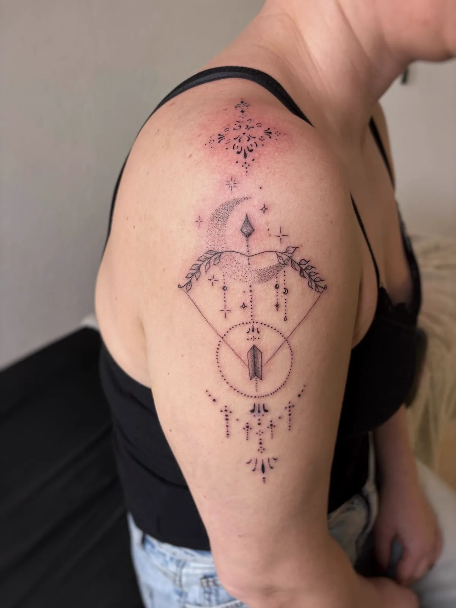
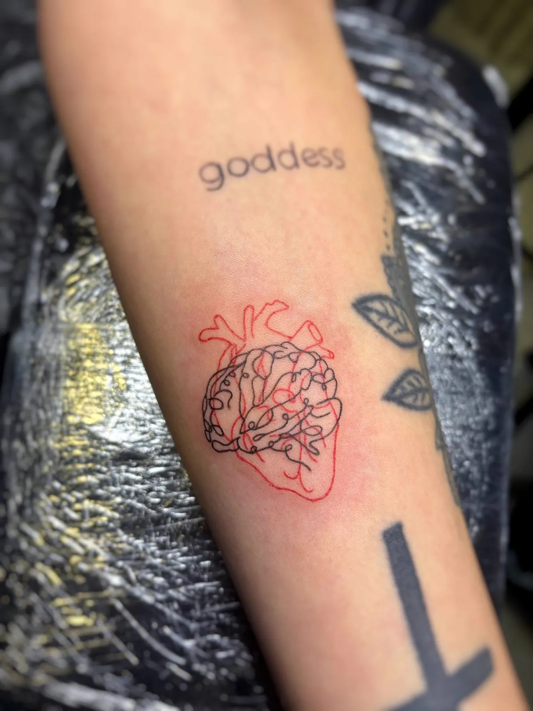
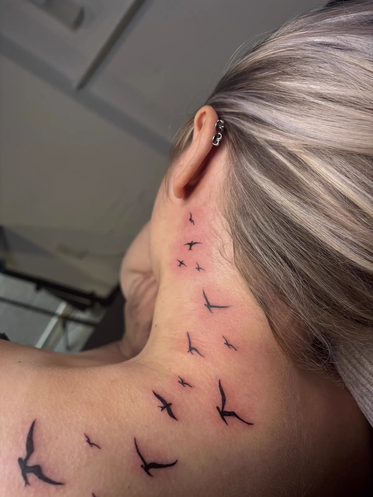
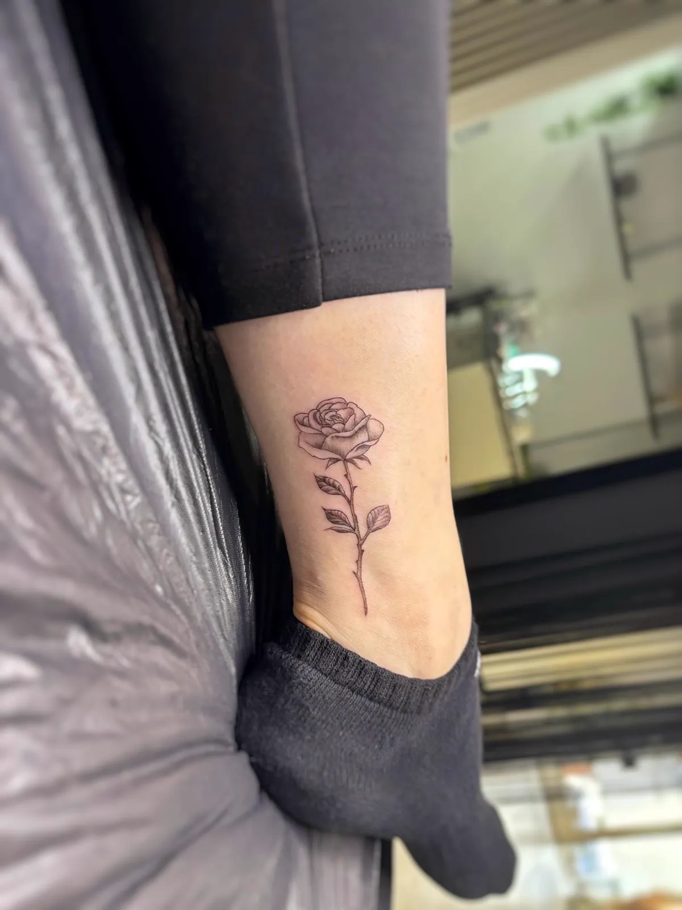
 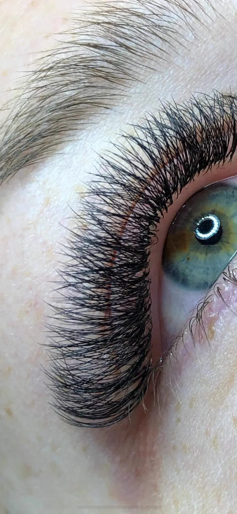
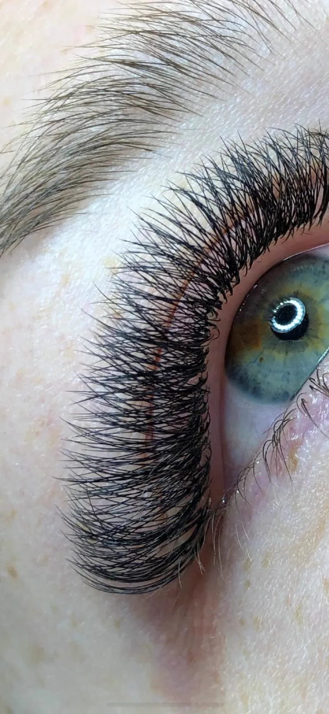
 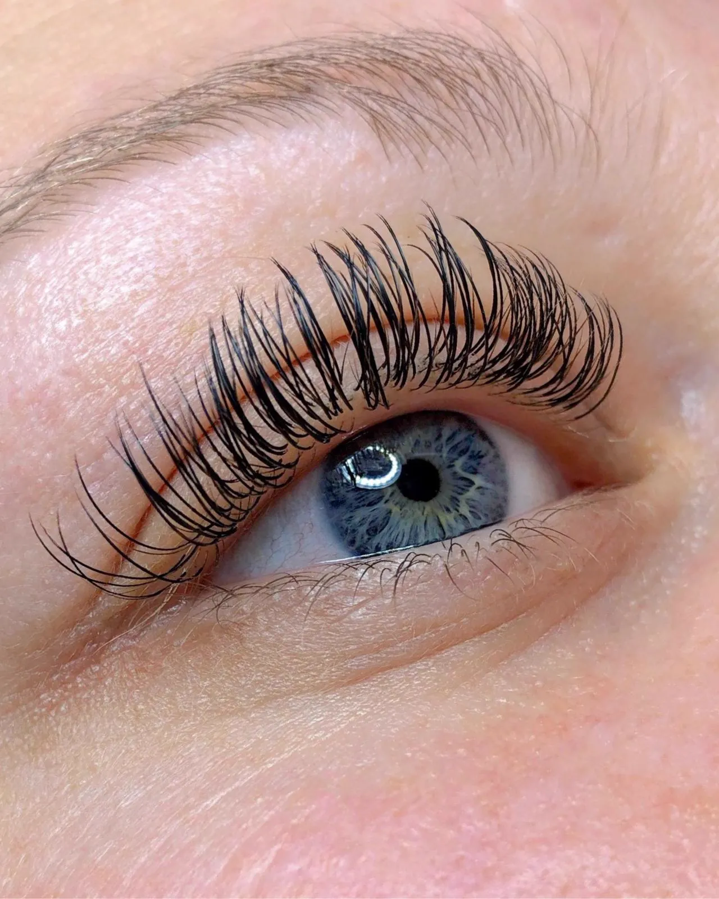
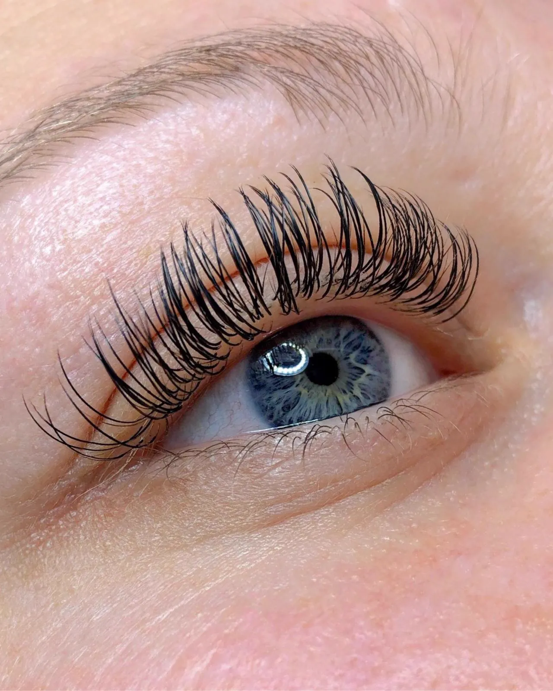

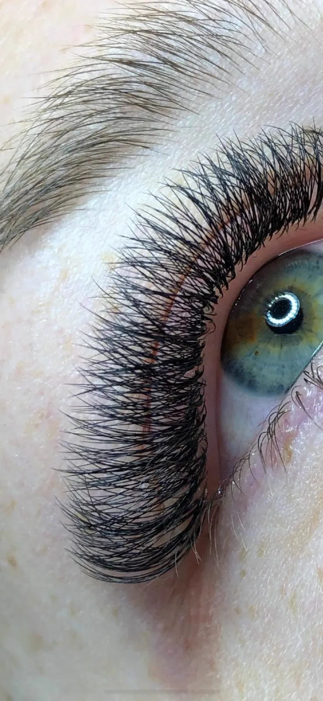
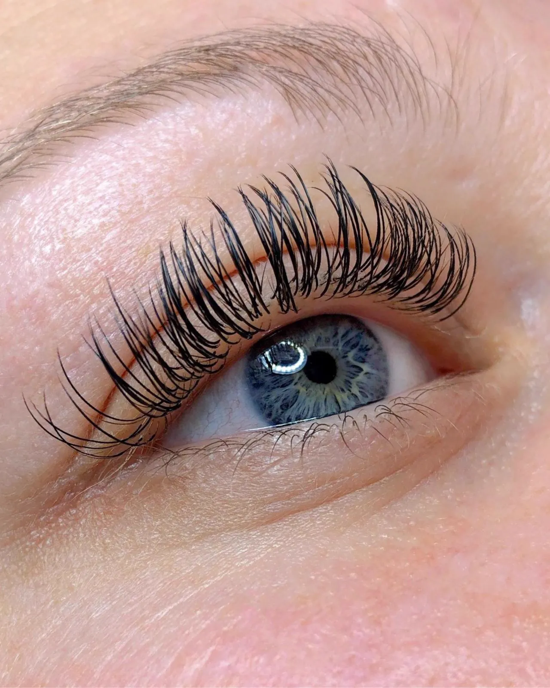
Jedes Tattoo erzählt eine Geschichte.
Hier sind einige davon.
Wie eine Sternenkarte auf der Haut – filigrane Ornamente, die den eigenen Weg zeichnen. Jeder Punkt, jedes Blatt, jeder Stern hat seine Bedeutung.
Ein einziges Wort. Eine einzige Linie. Und doch sagt es alles. Manchmal braucht es nicht mehr als das.
Mom ♡ Dad – für die Menschen, die uns zu dem gemacht haben, wer wir sind. Eine Verbindung, die unter die Haut geht. Im wahrsten Sinne.
Symmetrie trifft Seele. Jedes Detail von Hand gestochen – Blatt für Blatt, Punkt für Punkt. Hier wird Haut zur Leinwand und Präzision zur Meditation.
Eine Blüte, so zart wie der Moment, in dem sie aufgeht. Feine Linien, die das Vergängliche festhalten – für immer auf der Haut.
Ein kleiner Engel, der über jeden Schritt wacht. Filigran und voller Wärme – wie eine stille Umarmung, die man immer bei sich trägt.
Kleine Pfoten, umgeben von Sternen. Weil unsere treuesten Begleiter ein Stückchen Himmel auf Erden sind – und Spuren hinterlassen, die nie verblassen.
Angel – ein Name, ein Gesicht, ein ganzes Leben in wenigen Linien. Manche Tattoos sind mehr als Kunst. Sie sind Liebe, die bleibt.
Jede Geschichte verdient es, erzählt zu werden. Welche ist deine?
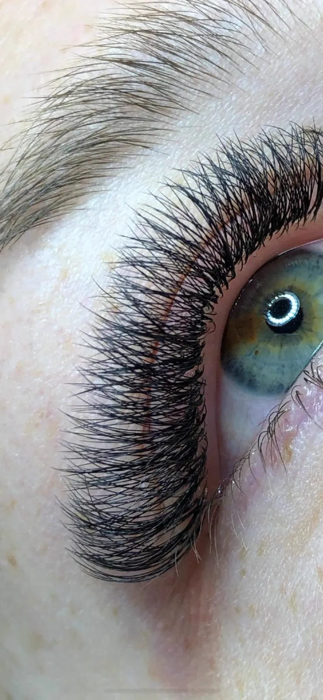
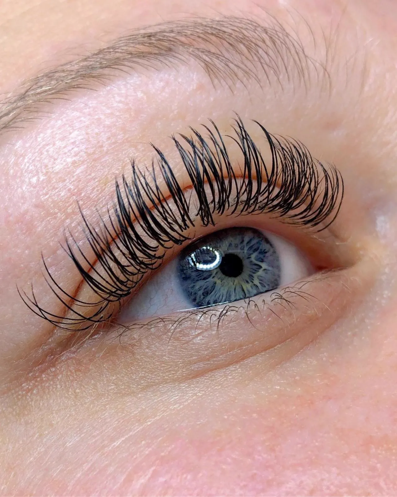
Fülle einfach das Anfrage-Formular auf meiner Seite aus. Beschreibe dein Wunschmotiv, die Körperstelle und ungefähre Größe. Ich melde mich dann bei dir mit einem Vorschlag, Termin und Preisinfo.
Du musst mindestens 18 Jahre alt sein, um dich bei mir tätowieren zu lassen. Ein gültiger Ausweis wird vor Ort überprüft.
Nach dem Termin bekommst du von mir eine ausführliche Pflegeanleitung. Grundsätzlich gilt: Folie nach Anweisung tragen, sanft waschen, eincremen und direkte Sonne meiden.
Die Preise richten sich nach Größe, Detailgrad und Aufwand des Motivs. Schreibe mir deine Idee und ich erstelle dir ein individuelles Angebot.
Mein Studio ist in 72415 Grosselfingen (Raum Balingen / Hechingen, Baden-Württemberg). Die genaue Adresse bekommst du nach der Terminbestätigung.
Ja! Ich komme mit meinem Equipment direkt zu eurer Hochzeitslocation. Ob Couple-Tattoos, Matching-Motive oder kleine Tattoos für die Gäste – alles ist möglich. Mehr erfahren